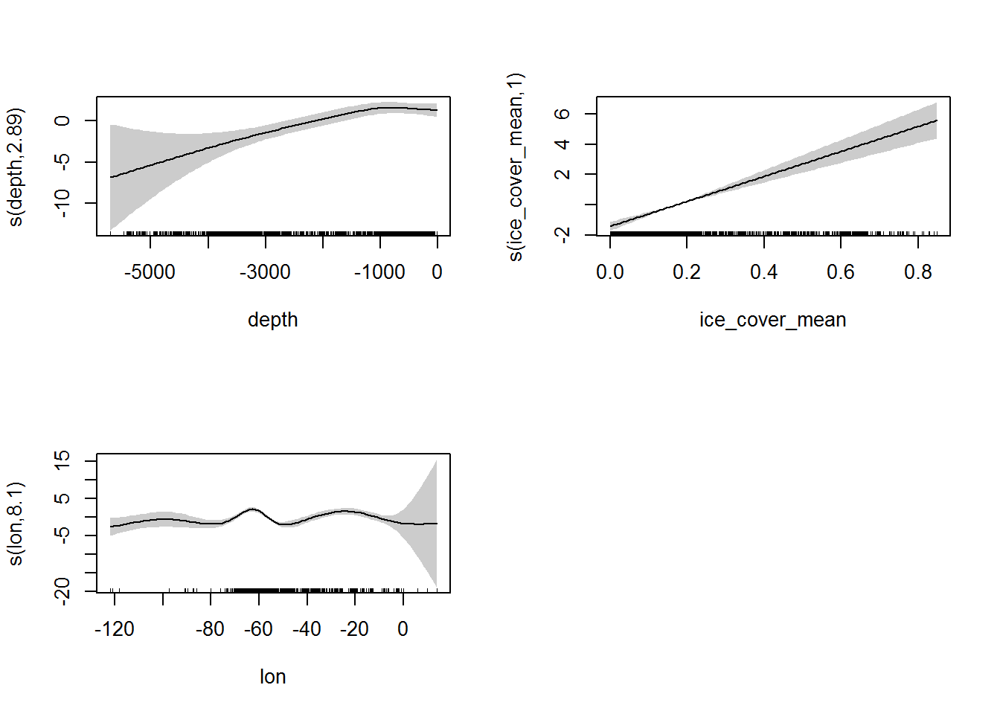
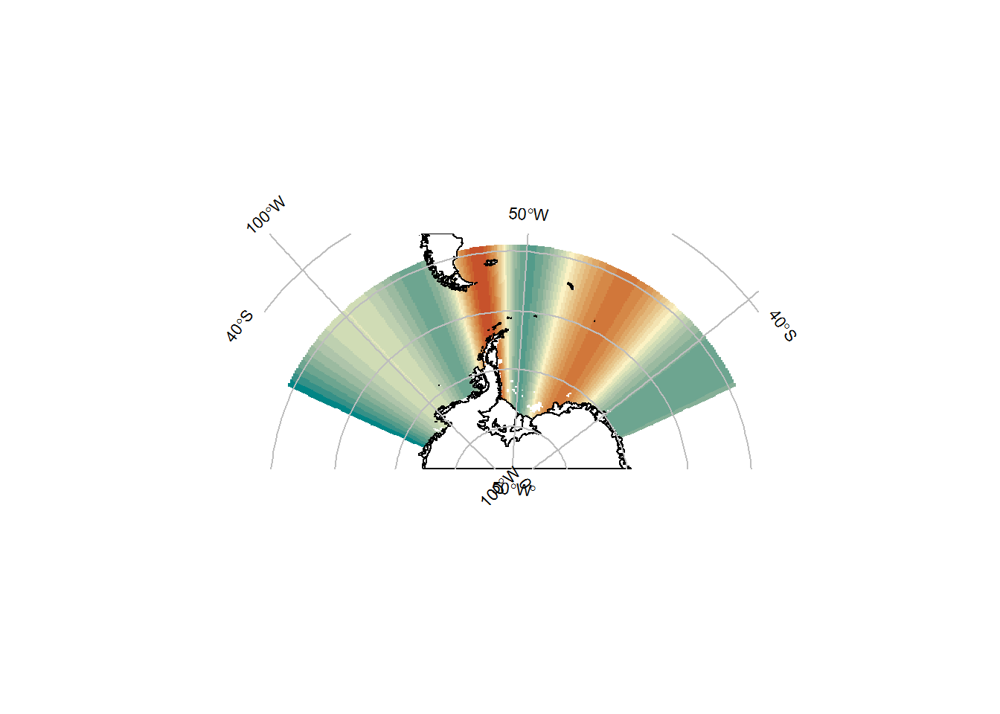

15 SDM extra bits and pieces
This section contains some additional material that either arrived too late for beginning of the workshop or didn’t fit nicely into the existing structure. This material might be moved elsewhere at a later time.
15.1 Spatial partial predictions
The SDM outputs section talked about partial dependence plots. These plots show the contribution that each predictor term makes to a model. It’s also worth knowing that these partial dependencies can be evaluated on a spatial grid, which will show the spatial pattern of the contribution that a model term makes. This can be very useful for evaluating whether a particular model term is behaving as it should.
In many SDM applications we don’t tend to have predictor variables that directly tell us about processes and conditions that affect our target species. This is particularly true in the Southern Ocean because of its vast and remote nature. We typically rely on satellite- or model-derived information, which is not necessarily directly linked to the behaviour or distribution of our target species. Instead, we often rely on proxy variables.
For example, we rarely have direct information about prey availability for predator species. Instead we might use e.g. satellite-derived chlorophyll, which tells us something about primary productivity, and therefore might be useful as a proxy for prey availability for higher trophic levels. But it is important to check that these proxy variables are acting in the model in a sensible way, and indeed that they are actually acting as a proxy for the process that we intended them to.
15.1.1 Example
Let’s return to the example that was shown in the Overview section. This first part of the code is the same as before:
library(dplyr)
library(worrms)
library(robis)
library(blueant)
library(mgcv)
library(SOmap)
my_cmap <- if (getRversion() >= "3.6") {
hcl.colors(21, "Geyser")
} else {
c("#008585", "#359087", "#539B8A", "#6DA590", "#85AF97", "#9BBAA0", "#AEC4AA",
"#BED0B0", "#D0DCB5", "#E5E7BC", "#FBF2C4", "#F3E3B2", "#EDD59F", "#E7C68C",
"#E3B77A", "#DEA868", "#DA9857", "#D58847", "#D1773A", "#CC6530", "#C7522B")
}
## taxonomy
x <- occurrence(datasetid = "cb16377b-56a8-4d95-802d-4eec02466773")
my_species <- "Euphausia crystallorophias"
tax <- wm_records_names(name = my_species)
my_aphia_id <- tax[[1]]$valid_AphiaID
## data to presence/absence format
xfit <- x %>% dplyr::rename(lon = "decimalLongitude", lat = "decimalLatitude") %>%
group_by(lon, lat) %>%
dplyr::summarize(present = any(my_aphia_id %in% aphiaID))
## environmental data
## put the data into a temporary directory
my_data_directory <- tempdir()
data_source <- sources_sdm("Southern Ocean marine environmental data")
## fetch the data
status <- bb_get(data_source, local_file_root = my_data_directory, verbose = TRUE)
nc_files <- Filter(function(z) grepl("\\.nc$", z), status$files[[1]]$file)
## create a raster stack of selected layers
env_stack <- subset(stack(nc_files), c("depth", "ice_cover_mean"))
temp <- as.data.frame(raster::extract(env_stack, xfit[, c("lon", "lat")]))
xfit <- bind_cols(xfit, temp)
fit <- gam(present ~ s(depth) + s(ice_cover_mean) + s(lon), family = binomial, data = xfit) This gam presence/absence model is the same as in the Overview example, except that this time we have added lon (longitude) as a predictor term. You wouldn’t normally use latitude or longitude as a predictor in this way, we’re doing so here just to illustrate the example.
The partial dependence plots for this model:
plot(fit, pages = 1, shade = TRUE, scale = 0)
We can see that the partial term for longitude (bottom-left panel) is a bit wiggly - in particular, the bump at around -60 looks a little odd. However, it’s difficult to interpret that plot to know if this is an ecologically-plausible or informative fit.
Let’s make a spatial plot of that partial term.
## grid to predict onto
xpred <- expand.grid(
lon = seq(from = floor(min(xfit$lon)), to = ceiling(max(xfit$lon)), by = 0.25),
lat = seq(from = floor(min(xfit$lat)), to = ceiling(max(xfit$lat)), by = 0.25))
## environmental data across our grid
xpred <- bind_cols(as.data.frame(xpred),
as.data.frame(raster::extract(env_stack, xpred[, c("lon", "lat")])))
## partial prediction terms
sp_pred <- predict(fit, newdata = xpred, type = "terms")We use predict(..., type = "terms") to get the contribution of each term in the model across our xpred data (our grid). This type = "terms" option only works with some model types (GLMs and GAMs, for example), but analogous methods exist for other model frameworks.
Now plot the spatial contribution of the lon predictor term:
xpred <- cbind(xpred, sp_pred)
pr <- rasterFromXYZ(xpred[, c("lon", "lat", "s(lon)")])
## the "s(lon)" term is the fitted (smooth) predictor term
## plot it
projection(pr) <- "+proj=longlat +datum=WGS84"
p <- SOmap_auto(x = pr, bathy = pr)
p$bathy_palette <- my_cmap
p
It’s quite clear from this plot that the lon predictor term is simply allowing the model to fit higher probabilities in certain longitude bands. This doesn’t seem to be a particularly ecologically-insightful mechanism, so we’d probably drop that term from the model. We’d be better off trying to find a predictor variable that more directly explains what is happening in those bands in ecological terms.
One of the dangers to watch out for is a model term that appears to fit well on the training data, but which doesn’t have a plausible interpretation. It’s possible that this term is important to the model simply because it happens by chance to explain some of the patterns in the training data. But it’s not fitting those patterns in an ecologically-meaningful way. The danger here is that inferences that are subsequently made with that model (e.g. interpreting the importance of particular processes, or using the model to make predictions in different geographic areas or under different environmental conditions) are likely to be flawed, because there is little or no underlying ecological meaning to the model term.